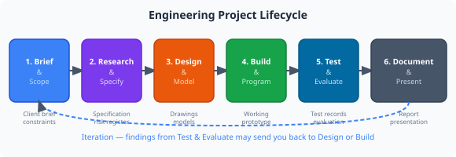
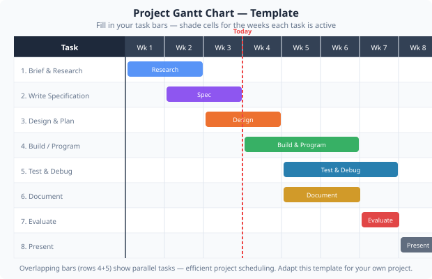

Applying structured project management methods to engineering tasks — from brief to delivery.

Most engineering projects follow a common lifecycle, regardless of scale. Understanding which phase you are in helps you focus your effort and communicate progress clearly:
What needs to be built? Who is it for? What are the constraints (time, budget, skills)?
Investigate options, define measurable requirements (the spec), identify risks.
Sketch, model, simulate. Select the best approach. Document decisions.
Make the first version. Accept that it will not be perfect — iteration is normal.
Test against the specification. Record results. Identify what to improve.
Write up what you did and why. Present findings to a technical or non-technical audience.

A Gantt chart is a bar chart that maps tasks against time. It is the most widely used project scheduling tool in engineering. Each row is a task; the bar shows when it runs. Overlapping bars show parallel work.
| Task | Week 1 | Week 2 | Week 3 | Week 4 | Week 5 | Week 6 |
|---|---|---|---|---|---|---|
| Research & brief | ||||||
| Specification | ||||||
| Design & modelling | ||||||
| Build & program | ||||||
| Test & evaluate |
Notice that design and build overlap in weeks 3–4 — this is normal in iterative engineering. The chart makes dependencies visible: you cannot build before you have designed.
A specification defines what a successful outcome looks like, in measurable terms. Vague requirements lead to disagreements about whether the project succeeded.
| Vague requirement | Measurable specification |
|---|---|
| "The arm should be accurate" | Repeat position accuracy ≤ ±2° on all joints after 10 cycles |
| "The arm should be safe" | All joint limits configured; risk assessment completed and signed; SOP posted at workstation |
| "The program should work" | G-code program completes 5 consecutive cycles without fault; cycle time ≤ 15 s |
| "Good documentation" | Circuit diagram, wiring list, and annotated code submitted; peer-reviewed |
You will create a project plan for your own robot arm assignment. This plan will guide your work in Modules 15 and 16.
GripperOpen, GripperClose, PumpOn, PumpOff) are available in all three programming modes (G-Code: M10/M11; RAPID: named commands; Blockly: dedicated blocks).
| Risk | Likelihood (H/M/L) | Impact (H/M/L) | Mitigation |
|---|---|---|---|
Most engineering project failures are not caused by bad technical skills — they are caused by poor planning. Running out of time, scope creep (the project keeps growing), and unclear requirements are the top three causes of cost overruns and late delivery in the engineering industry.
The tools in this module — Gantt charts, specifications, risk registers — are used by professional engineers on projects worth millions of pounds. You are learning the same language.
Think about: Look back at your Gantt chart. What is your critical path — the sequence of tasks where any delay will push back the final deadline? How could you protect it?
1. What makes a specification point useful rather than vague?
2. On a Gantt chart, overlapping bars on different tasks indicate:
3. The most common cause of engineering project failure is: